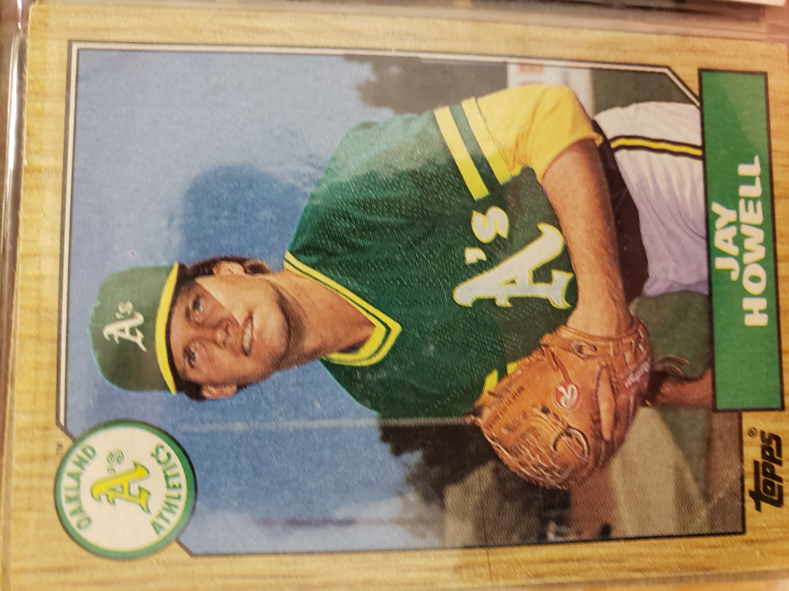

Work


Learning to code, more slowly than I'd like.
I've done an unlikely number of things personally and professionally, from building boats to managing a vintage musical instrument and hi-fi store, marketing copywriting to writing music and pop culture criticism.
After being displaced professionally by COVID and having a spanner thrown in the works by an MS diagnosis, I studied project management and earned my CAPM. Now I'm learning to write code as both a bankable skill and a means to see an app idea or two through to fruition.
I like to make things. As a musician and tinkerer, I assemble and play many of my own instruments, and had performances televised by the BBC as part of the Experimental Instrument Orchestra in the aughts. Before that, I played guitar and wrote minimalist noisy rock music as one fourth of Esau. These days I continue to tinker with building oddball noisemakers, and occassionally make a bit of film music.
I am a single father of four delightful human beings ranging in age from 33 to 8 and a half.
I know this looks like hot trash right now, but someday it won't.
816.555.5555 Email github LinkedIn elReclusa.com